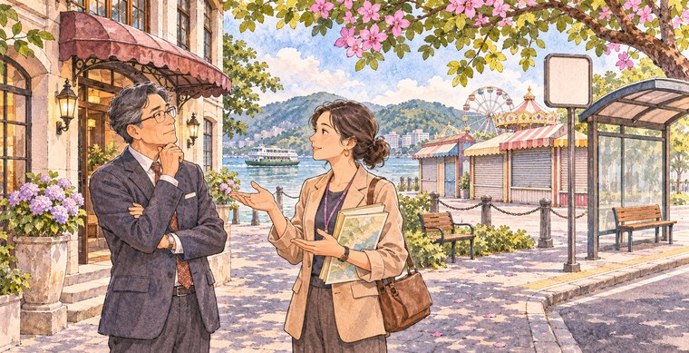

HSP-30 · 虛構海濱旅遊目的地 · 15–20分鐘 · 季節性 · 旅遊目的地管理 · 對居民的價值
旺季熱鬧，全年都能吸引人到訪？

季節性的影響不止於酒店
聯合國旅遊組織的指標指南指出，評估旅遊目的地的表現，除了入住率，也要考慮各季的開放安排、基礎設施和就業。經濟合作與發展組織的2026年旅遊分析指出，各季需求不均，並提醒全國數據可能掩蓋地方差異。該組織另於2025年發表旅遊目的地報告，指出應變能力與交通、社區支援及服務協調有關。
Fáilte Ireland的基爾肯尼計劃把延長開放時間及由持份者落實措施列為旅遊目的地發展工作。德國聯邦環境署則解釋按季統計的床位晚數指標量度甚麼，以及這些指標有何局限。這些是框架和計劃，並非某個淡季節慶能帶來效益的證據。以下的旅遊目的地及所有數字均屬虛構。
課堂決定
虛構的課堂情境。 一個海濱旅遊目的地的合作組織今年有120,000港元，可自行選擇推行一項計劃。理事會既重視計劃能否全年惠及居民，也重視旅客帶來的生意，但沒有用金額為兩者定出權重。現有的安全、無障礙及環境保障、居民服務和員工薪酬，均繼續獲得撥款，維持不變。新計劃尚未有任何預訂，也未簽訂合約。
旺季方案是在繁忙季節舉辦四場以旅客為主的文化活動。每場完整報價為30,000港元，涵蓋活動內容、人手、場地、無障礙安排、廢物處理和計劃行政。每場有100個參加名額。活動時段、公共交通及營運時間已核實足以應付所需；居民的出入不受影響，人流上限亦有保障。這些是可接待的名額，並非對參加人數或新增旅遊消費的預測。
平季方案由居民參與設計，在較清靜的月份舉辦六場下午活動，內容涵蓋手工藝和地方歷史，居民和旅客均可參加。核心計劃報價為每場20,000港元，每場有40個參加名額。報價包括核心人手、活動內容、場地使用、場內無障礙安排和行政工作。方案假設日常公共交通及景點開放時間足以應付所需，並未計入額外交通或延長開放的費用；這些假設尚未核實。
酒店表示，平季方案的每個擬定日期都有六十間客房尚未訂出。這既不代表已有旅客承諾到訪，也不代表居民有理由留宿。合作組織不能單靠算術，把空房換算成參加人數、職位或社區效益。兩個方案都必須在同一預算上限內成為完整而可落實的計劃；混合方案尚未有報價。理事會可以暫緩決定，而不必推廣無法落實的方案。
| 原有方案 | 核心／完整報價 | 名義參加名額 |
|---|
| 旺季方案 | 4 × 30,000港元，已核實可完整落實 | 4個日期 × 100個名額 |
| 平季方案 | 6 × 20,000港元，僅涵蓋核心部分；交通及開放時間的假設未經核實 | 6個日期 × 40個名額 |
| 單項計劃預算 | HK$120,000 | 客房有空置，不等於有人已承諾參加 |
你的決定你會暫時傾向旺季方案還是平季方案？說明你優先考慮誰的利益，以及必須先核實甚麼，才可把空置客房和計劃報價視為一項可實際體驗的旅遊安排。
第二輪 · 多了一項資料
營運時間表顯示，平季活動在15:00–18:00舉行，但展館平日15:00關閉，最後一班回程公共交通工具在16:00開出。核心報價原先假設展館照常開放、回程交通亦足夠。依賴該接駁服務的旅客和居民無法完成所宣傳的體驗。降低房價或增加宣傳，都無法填補這些缺口。
經核實，現有一個修訂版平季方案，活動日期是四個而非六個：核心內容及有薪服務每個日期14,000港元；增設無障礙回程交通服務合共24,000港元；安排展館人手並開放至18:30，合共18,000港元；協調、無障礙預訂及成效評估合共12,000港元。這些都是方案的增量成本，並無重複計算。餘款可留作應急儲備，不算作已提供的活動。
修訂後的核心報價反映重新設計及縮減後的方案，並非假設可按原報價等比例減價。每個日期仍有40個參加名額，另已確保每個日期有二十個來回交通名額，回程時間為18:45。其餘二十個參加名額供有能力並自願經已評估的本區無障礙路線自行到場的人士使用；不會根據對人口特徵的假設替任何人指定出行方式。預訂時按實際需要分配交通名額，依賴該服務的預訂以二十個為限。不假設有的士補貼或額外運載名額。
安全及無障礙檢查已確認修訂後的時間表、等候安排、有薪人手、場地容量及環境限制。各服務供應商的承諾可在宣傳前落實，但實際參加情況仍未有證據。旺季方案仍可按原來的完整報價120,000港元推行。合作組織必須監察居民體驗、服務可靠性、有薪工作及環境壓力，而不只是為酒店入住率感到高興。這裏並沒有聲稱四個活動日期就足以令當地成為全年的旅遊目的地。
你的決定你會撥款推行修訂版平季方案、選擇旺季方案，還是暫緩決定？計算修訂後的預算、參加名額和交通名額，再訂明必須滿足哪些條件才可推行，以及用哪些指標把對居民的實際用處與酒店入住率區分開來。
回應初步選擇
旺季方案是四 × 30,000港元 = 120,000港元，報價涵蓋完整安排，已核實可落實，共有400個參加名額。平季方案是六 × 20,000港元 = 120,000港元，只涵蓋列明的核心部分，所依據的交通、無障礙及開放安排假設未經核實，名義上有240個名額。報價金額相同，不代表兩個方案同樣完整。兩者的名額都不是需求預測。
如果理事會優先考慮在較清靜的月份提供實用服務和促進社區參與，可暫時傾向平季方案，但須以核實交通、場地開放時間、有薪人手、無障礙安排及環境條件為前提。如果首要目標是在已核實的接待能力內，短期內為旅客提供活動，選擇旺季方案亦有理據。空置客房只是其中一環，不等於完整體驗，也不能證明居民會受惠。
回應修訂後的營運選擇
修訂版平季方案的開支為四 × 14,000港元 + 24,000港元 + 18,000港元 + 12,000港元 = HK$110,000。在120,000港元的上限內，尚可預留 HK$10,000 作應急之用。四 × 40，合共 160個參加名額；四 × 20，合共 80個來回交通名額。這些是各活動日期的名額，不是去重後的居民或旅客人數，也不是客房晚數或職位數目。
如果理事會接受規模較小、但確實可用且切合居民服務目標的安排，宜選擇修訂版平季試行方案。不要宣傳原來的六場活動體驗。若優先考慮另一項已列明的目標，旺季方案仍有理據；若無法取得服務承諾，或無法落實無障礙營運安排，則應暫緩推行。這些數字不能證明平季方案的社會回報較高，也不能證明用盡撥款會更好。
把相互銜接的安排落到實處
宣傳前，須取得服務供應商就核心方案的執行、展館開放、無障礙回程交通、等候安排和人手所作的承諾，並列明適用日期。確認由誰負責更新資料、取消安排、無障礙溝通，以及日後若引入收費項目，由誰負責退款。計劃不假設有入場收入，因此沒有門票收入可抵銷開支。
按預訂人士的交通需要分配名額：每個日期總名額為四十個，其中依賴該交通服務的參加者最多二十人。保留自行到場的選擇，而不是迫使人步行或付費留宿一晚。若有供應商退出，或安全及無障礙安排無法落實，應調整或取消行程，並清楚通知，而不是不作聲張地出售不完整的行程。設有應急儲備，不代表可以超出預算上限購買未列明的服務。
衡量整個旅遊目的地，而非只看客房
追蹤所宣傳的活動和回程服務是否實際運作、名額使用情況和未獲滿足的交通需求，分開記錄居民與旅客的參與情況，並了解無障礙參與情況及居民意見。把重複參加的次數與去重後的參加人數分開統計。記錄有薪工時和員工體驗，但不要把臨時活動說成創造了長期職位。
監察噪音、廢物、出行負擔及日常社區活動有否因而被擠出；月份較清靜，不代表可以把壓力分散到各處。酒店入住率可以是背景指標之一，但不應用作衡量居民實際受惠程度的主要指標。先與合適的基準比較，並留意天氣、其他活動和選擇效應，再判斷變化是否由計劃帶來。利用試行結果決定往後各季是否應提供支援，以及如何支援。
教師說明
請學生畫出由出發到回程的完整體驗：交通、開放中的景點、人手、無障礙安排和所需資料。酒店有空房，不等於有可行的行程。第二輪披露的資料改變了方案的可行性和活動日期數目，而不只是改變宣傳重點。修訂報價明確是一份新報價，並非把原有報價按比例換算。
HSP-03優化單一酒店對不同住宿模式之間擠出效應的處理；ECO-17協調兩家互補供應商的承諾。本個案的分析單位是旅遊目的地跨季節提供的服務，既考慮居民，也考慮旅客。要求學生訂明目標、預算上限，並提出服務可落實的證據；現有資料不足以支持有關計劃帶動就業、消費乘數效應或轉型為全年旅遊目的地的說法。
第二輪
營運時間表顯示，平季活動在15:00–18:00舉行，但展館平日15:00關閉，最後一班回程公共交通工具在16:00開出。核心報價原先假設展館照常開放、回程交通亦足夠。依賴該接駁服務的旅客和居民無法完成所宣傳的體驗。降低房價或增加宣傳，都無法填補這些缺口。
經核實，現有一個修訂版平季方案，活動日期是四個而非六個：核心內容及有薪服務每個日期14,000港元；增設無障礙回程交通服務合共24,000港元；安排展館人手並開放至18:30，合共18,000港元；協調、無障礙預訂及成效評估合共12,000港元。這些都是方案的增量成本，並無重複計算。餘款可留作應急儲備，不算作已提供的活動。
修訂後的核心報價反映重新設計及縮減後的方案，並非假設可按原報價等比例減價。每個日期仍有40個參加名額，另已確保每個日期有二十個來回交通名額，回程時間為18:45。其餘二十個參加名額供有能力並自願經已評估的本區無障礙路線自行到場的人士使用；不會根據對人口特徵的假設替任何人指定出行方式。預訂時按實際需要分配交通名額，依賴該服務的預訂以二十個為限。不假設有的士補貼或額外運載名額。
安全及無障礙檢查已確認修訂後的時間表、等候安排、有薪人手、場地容量及環境限制。各服務供應商的承諾可在宣傳前落實，但實際參加情況仍未有證據。旺季方案仍可按原來的完整報價120,000港元推行。合作組織必須監察居民體驗、服務可靠性、有薪工作及環境壓力，而不只是為酒店入住率感到高興。這裏並沒有聲稱四個活動日期就足以令當地成為全年的旅遊目的地。
你的決定你會撥款推行修訂版平季方案、選擇旺季方案，還是暫緩決定？計算修訂後的預算、參加名額和交通名額，再訂明必須滿足哪些條件才可推行，以及用哪些指標把對居民的實際用處與酒店入住率區分開來。